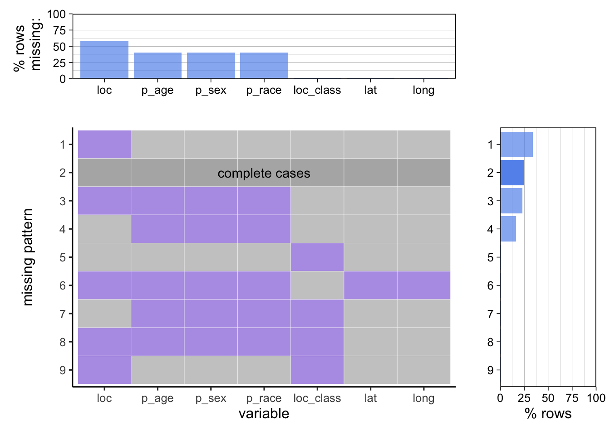
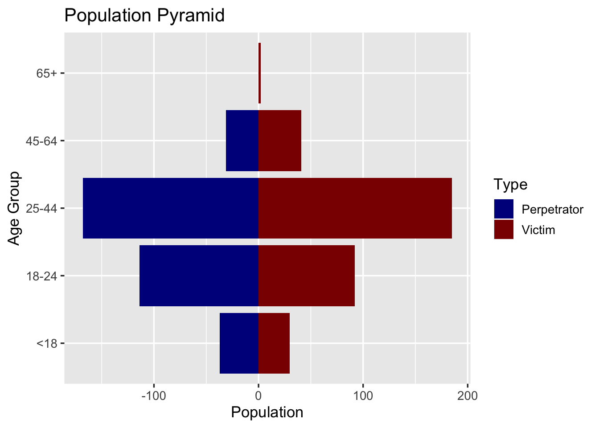
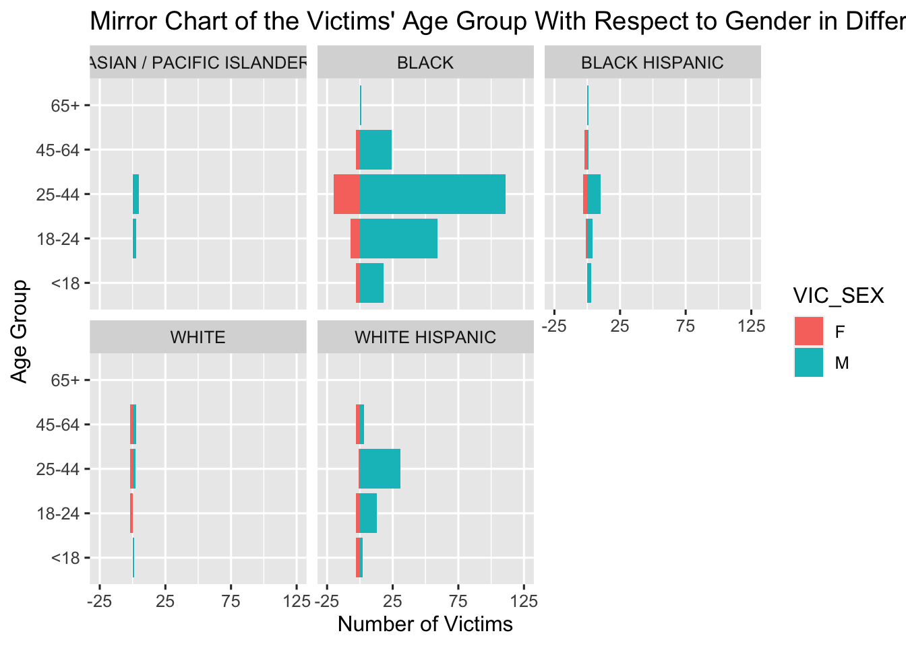

Chapter 4 Results
4.1 The Victims/Perpetrators’ Characteristics
The Contrast Between Perpetrators’ Age vs Victims’ Age (Population Pyramid):

Note: In order to present the age groups in its order, this pyramid is not sorted based on the population(count)
From this graph, it is obvious that the age group 25-44 ranks first in the number of both perpetrators and victims. However, it is also worth noticing that the number of teenage perpetrators(age < 24) is more than that of the teenage victims, whereas this difference is reversed for the age groups above 25, so that there are more victims than perpetrators for ages above 25, especially for ages above 45. Thus speaking of the age group distribution, perpetrators are younger than the victims.
The Visualization of the Victims’ Characteristics (Mirror Chart):

From the mirror chart above, among all the victims, Black has the highest number of victims in terms of race, while the age group 25-44 ranks top among all races except for White. Most of the victims are male, but there are female victims across almost all age groups and all races except for Asian/Pacific Islander.
Victims’ Characteristics Alternative (Alluvial Chart)
 Similar to the previous findings, male victims are a lot more than female victims. Most of them are within 18-24 and 25-44 age groups, which are young adults and mid-age people. Black people are the majority races, followed by Hispanics. White, Asian and other race are the minorities in terms of victims.
Similar to the previous findings, male victims are a lot more than female victims. Most of them are within 18-24 and 25-44 age groups, which are young adults and mid-age people. Black people are the majority races, followed by Hispanics. White, Asian and other race are the minorities in terms of victims.
The Visualization of the Perpetrators’ Characteristics (PERP_AGE_GROUP, PERP_SEX, and PERP_RACE). (Spine Plot)
## PERP_RACE freq
## 1 ASIAN / PACIFIC ISLANDER 12
## 2 BLACK 584
## 3 BLACK HISPANIC 88
## 4 WHITE 10
## 5 WHITE HISPANIC 143
## 6 <NA> 563
Note: To make the overlapped labels readable, (B,WH,BH,A/PI,W) on the y-axis are the abbreviations for “BLACK”, “WHITE HISPANIC”, “BLACK HISPANIC”, “ASIAN / PACIFIC ISLANDER”, “WHITE”.
There are significantly more male perpetrators than female perpetrators, with 25-44 ranks first in terms of age group and Black in terms of race. There is also a correlation with the former graph of the victims in terms of the rank of age group and race.
4.2 Visualization Relating to Incidents Demographics
The Number of Shooting Incidents With Respect to the Precincts (Map):
Referring to the map of NYC, Precinct 44 is the Bronx, Precinct 75 is East New York, and Precinct 73 is Brownsville, the three areas where most shooting incidents occurred this year.
The Correlation Between Different Boroughs and the Victims/Perpetrators. (Histogram + facet)

In general, Brooklyn and Manhattan are the boroughs where most shooting incidents occurred. Most of the perpetrators and victims are under the age group 25-44 in all boroughs, however, there are more teenage perpetrators (18-24) in some of the boroughs like the Bronx, while the number of victims under the age group 25-44 is much higher than that of perpetrators in the Bronx. The distribution of the graphs between perpetrator and victim are highly correlated, except for the boroughs of the Bronx and Queens.
The Ratio of Death For The Shooting Incidents In Each Borough (Stacked Bar Chart)

Bronx and Brooklyn are where most shooting incidents happened, while Bronx has higher death rates than Brooklyn. Manhattan and Queens are similar and relatively safer than the former two Boroughs, having about half less shooting incidents reported. Among all five boroughs, Staten Island is the safest in terms of the total number of shooting incidents.
The Ratio of Death With Respect To The Location of The Shooting Incidents (Cleveland dot plot)
By plotting the shooting incidents against descriptive locations, we noticed that for most locations the number of incidents resulting in the death of the victim is lower than that of the victim survived, however, for places like beauty/nail salon, social club, bar, and liquor store, this situation is reversed that there are more death cases.
4.3 Visualization Relating to Incidents Date Time
The Ratio of Death in the Shooting Incidents With Respect to Hours In a Day. (Stacked Bar Chart) We can observe that shooting incidents have a clear drop between 5:00AM ~ 1:00PM, while the high shooting incident frequency starting around 7:00PM, it reaches peak around 10:00PM. The death cases went up as number of shooting incidents are reported, death rate are not very related to the time of shooting incident happened, however, it is still higher in the evening than daytime.
The Number of Shooting Incidents With Respect To Month (Line Chart with LOESS Smoother)
From the above graph it is obvious that the number of shooting incidents peaks at July, and there is a general trend that starting from January 2022, the number of incidents went up and reached the peak, then it slightly went down until October, which is the last released time of this data set.
The Relationship Between the Month and Boroughs of Shooting Incidents (Line Chart)

Alternative (Stacked Histogram)
The above two graphs visualized the number of shooting incidents in the five boroughs by weeks in the past 3 quarters. From the line chart we noticed that Brooklyn’s incidents peaks at April, but the total number of incidents in all five boroughs peaks at July as shown by the stacked histogram.
4.4 Summary of Results:
In this analysis of the most recent shooting incidents in NYC, we found out that East New York, the Bronx, and Brownsville are the most dangerous areas in New York City in terms of the number of shooting incidents. And black males with age between 25 and 44 are the most vulnerable, as this group of people has the highest number of victims in these incidents. In general, perpetrator tends to be younger than the victims, and the age group 25-44 ranks first in both the number of perpetrators and the number of victims across all boroughs. For college students (aged between 18-24) in NYC, Brooklyn is the most dangerous borough as it has the highest number of victims under this age group. And though in general apartment building has the highest number of shooting incidents, places like Beauty/nail salon, social club, liquor store, and bar have a higher death rate. Speaking of time of the occurrence, July is when the number of shooting incidents peak so far this year, while the trend is decreasing since July.